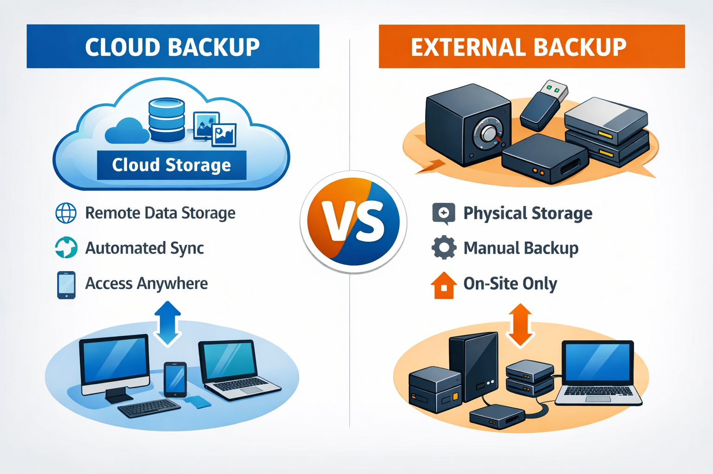
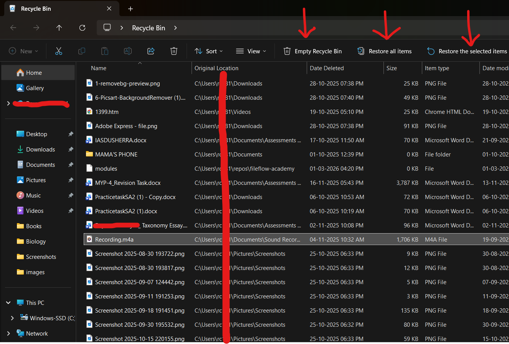

Data loss can occur through hardware failure, accidental deletion, malware, or system corruption. Relying on a single device is a risk. Backup strategies reduce vulnerability.
A widely recommended method is the 3-2-1 rule: maintain three copies of important data, store them in two different formats, and keep one copy off-site (such as in cloud storage). This ensures redundancy without excessive duplication.
Backups should be scheduled and consistent. Irregular backups create gaps in protection. Automated cloud synchronisation can reduce manual effort while maintaining safety.
Data safety is not reactive; it is preventative. The absence of problems today does not guarantee security tomorrow.

Recycle Bin Behaviour
When files are deleted, they are often moved to a temporary storage area known as the recycle bin. This system provides a recovery buffer, allowing restoration before permanent deletion.
However, files are not fully removed until the bin is emptied. Users must understand this distinction to manage storage effectively. Large files may continue occupying space even after deletion.
Regular review of deleted items ensures accidental removals can be corrected. Permanent deletion should be deliberate, not impulsive.

Module Assessment
Question 1
Why use backups?
Question 2
Your laptop suddenly stops working the night before submitting an assignment. Which practice would have prevented losing your work?
Question 3
What is the main purpose of a backup?
Question 4
You accidentally delete a document but realise immediately that you still need it. What should you check first?
Question 5
Which storage option is most useful for automatic backups?
Question 6
A student empties the recycle bin without checking its contents. What is the main risk?
Question 7
What does the 3-2-1 backup rule recommend?
Question 8
Your friend keeps all project files on one USB drive only. What is the problem with this approach?
Question 9
Which action improves data safety the most?
Question 10
A group project folder contains critical work. What is the best safety strategy?